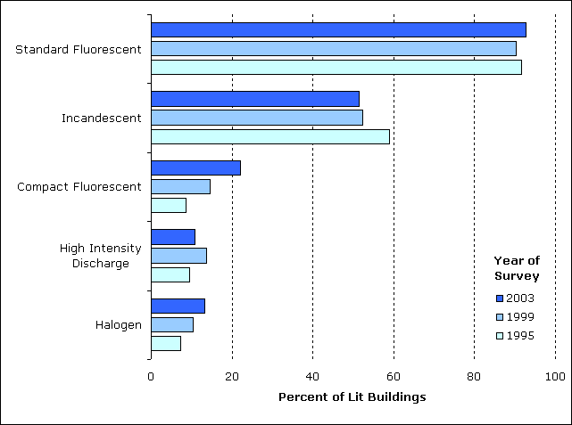
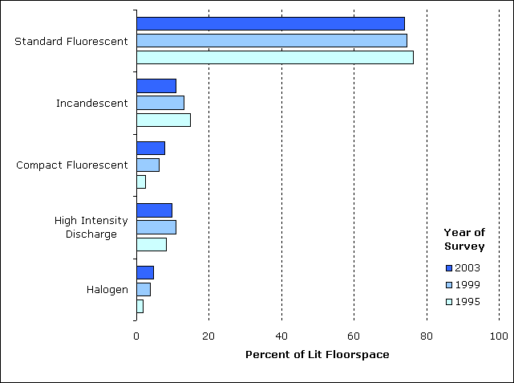

Changes in Lighting
The percentage of commercial buildings with lighting was unchanged between 1995 and 2003; however, three lighting types did show change in usage. Compact fluorescent lamps and halogen lamps showed a significant increase between 1995 and 2003 while the use of incandescent lights declined. The lighting questions in the 1995, 1999, and 2003 CBECS questionnaires were virtually identical which facilitates comparison across survey years.
- The use of compact fluorescent lamps more than doubled, from just under 10 percent of lit buildings to more than 20 percent (Figure 17 and Table 5).
- The use of halogen lamps nearly doubled, from 7 percent to 13 percent of lit buildings.
- Use of incandescent lights was the only lighting type to decline; their use dropped from 59 percent to just over one-half of lit buildings.
- Standard fluorescent lamps and high intensity discharge lamps showed no significant change in use.
Figure 17. The percentage of buildings that use compact fluorescent lamps more than doubled between 1995 and 2003.
Note: Data are for non-mall buildings.
Source: Energy Information Administration, 1995, 1999, and 2003 Commercial Buildings Energy Consumption Survey.
Table 5. Types of Lighting Used in Commercial Buildings by Year of Survey
| Total Lit Buildings (thousand ) |
Buildings Lit by Each Type of Light (thousand) |
|||||
|---|---|---|---|---|---|---|
| Standard Fluorescent |
Incandescent | Compact Fluorescent |
High |
Halogen | ||
| Year of Survey (All Buildings) |
||||||
| 2003 | 4,248 | 3,943 | 2,184 | 941 | 455 | 565 |
| 1999 | 4,038 | 3,647 | 2,116 | 590 | 550 | 416 |
| 1995 | 4,095 | 3,750 | 2,415 | 355 | 385 | 295 |
| Note: Data are for non-mall buildings. Source: Energy Information Administration; 1995, 1999, and 2003 Commercial Buildings Energy Consumption Survey. |
||||||
- The percentage of floorspace lit by compact fluorescent lamps nearly tripled, from 3 percent in 1995 to 8 percent in 2003 (Figure 18 and Table 6).
- Halogen lamps showed a significant increase, from 2 percent to 5 percent.
- The percentage of floorspace illuminated by incandescent lamps declined between 1995 and 2003, from 15 percent to 11 percent.
- Neither standard fluorescent lamps or high intensity discharge lamps showed significant changes in the percentage of floorspace that was illuminated.
Figure 18. The percentage of floorspace illuminated by compact fluorescent and halogen lamps more than doubled between 1995 and 2003.
Note: Data are for non-mall buildings.
Source: Energy Information Administration, 1995, 1999, and 2003 Commercial Buildings Energy Consumption Survey.
Table 6. Floorspace Lit by Types of Lighting by Year of Survey
| Total Lit Area (million square feet) |
Floorspace Lit by Each Type of Light (million square feet) |
|||||
|---|---|---|---|---|---|---|
| Standard Fluorescent |
Incandescent | Compact Fluorescent |
High |
Halogen | ||
| Year of Survey (All Buildings) |
||||||
| 2003 | 51,342 | 37,918 | 5,556 | 4,004 | 4,950 | 2,403 |
| 1999 | 49,779 | 37,150 | 6,496 | 3,058 | 5,343 | 1,913 |
| 1995 | 45,773 | 34,910 | 6,746 | 1,161 | 3,725 | 779 |
| Note: Data are for non-mall buildings. Source: Energy Information Adminitration; 1995, 1999, and 2003 Commercial Buildings Energy Consumption Survey. |
||||||
Lighting in Commercial Buildings
Introduction
Lighting and Principal Building Activity
Lighting and Building Size and Year Constructed
Changes in Lighting
Detailed lighting tables |
HTML |
Excel |
PDF |
|---|---|---|---|
| Table L1. Floorspace Lit by Lighting Type (Non-Mall Buildings), 1995 | |||
| Table L2. Floorspace Lit by Lighting Type (Non-Mall Buildings), 1999 | |||
| Table L3. Floorspace Lit by Lighting Type (Non-Mall Buildings), 2003 | |||
| Note: Excel version includes tab for relative standard errors (RSEs). |
Return to: CBECS Home Page
Specific questions may be directed to:
Alan Swenson
Alan Swenson
Date released: April, 2009